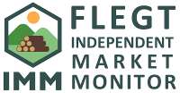

This dashboard provides access to and analysis of statistical data on EU imports of timber, paper and pulp from countries that are implementing or negotiating a FLEGT Voluntary Partnership Agreement with the EU and other countries supplying tropical timber products to the EU.
The dashboard has been developed by the FLEGT Independent Market Monitor (IMM). Funded by the EU and managed by the International Tropical Timber Organization (ITTO), the IMM’s role is to use trade flow analysis and market research to independently assess trade and market impacts of FLEGT Voluntary Partnership Agreements (VPAs) in the EU and partner countries.
The data is derived from Eurostat COMEXT compiled and validated by IMM.
Trade flows can be explored and relevant data downloaded (as a csv file) by selecting either:
All questions or comments relating to this dashboard should be sent to technical@flegtimm.eu
